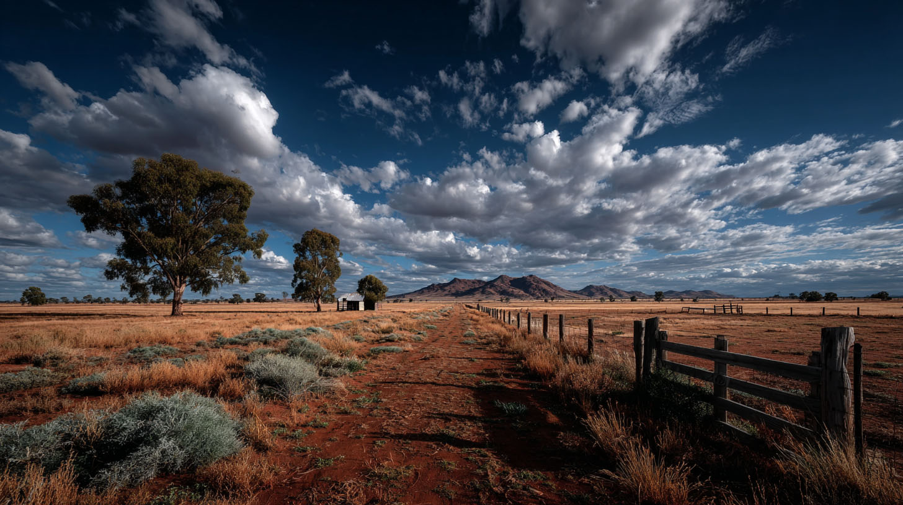

MILLER PASTORAL CO.

EST. 1968 - NORTHERN TERRITORY
We run Brahman cross cattle across 4,000 square kilometers of the hardest country in Australia. We respect the land, we respect hard work, and we don't take kindly to strangers in suits.
PRIVATE PROPERTY. NO TRESPASSING.
SURVIVORS WILL BE PROSECUTED.
> UHF RADIO INTERCEPT // CHANNEL 40 // RECORDED 02/09/2026
> APEXIAN REP: "Mr. Miller, the $50 million offer is final. The development is moving forward. You can't stop progress."
> MILLER: "Listen to me very carefully, son. I just put a .308 round through that little toy helicopter you had buzzing my cattle. You want to build a runway for your boss's black flights? Not on my land. You send your union thugs out here, and I promise you, the desert is very big and very deep. Don't call this channel again."